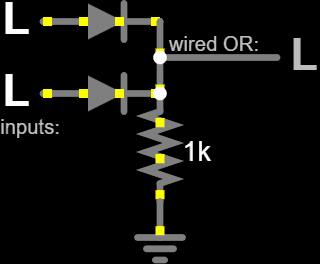
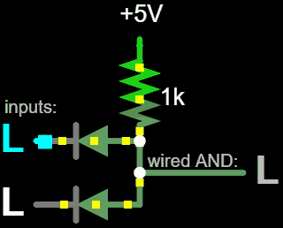
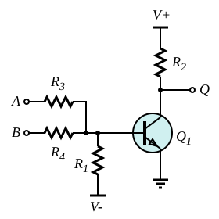
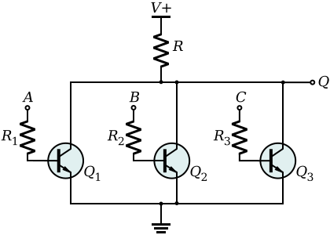
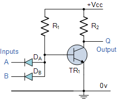

It is possible to build some logic gates without any transistors, using just diodes and resistors. Although DRL gates have significant disadvantages for general-purpose use, we do still occasionally use this architecture in some applications thanks to its simplicity.
If any input is High, its diode will conduct, and the output voltage will be High
If all inputs are Low, none of the diodes will conduct, and the pull-down resistor will pull the output voltage Low.

If any input is Low, its diode will conduct, and the output voltage will be Low
If all inputs are High, none of the diodes will conduct, and the pull-up resistor will pull the output voltage High.

The first successful family of digital logic ICs was built in the 1960s using resistors and transistors.
A single BJT can be wired as a NOR gate just by applying two or more input signals, each with its own resistor (R3 and R4 in this example), to the Base terminal of the BJT. If any of the input signals is High, current flows into the Base and the transistor conducts, pulling the output signal Low. If all of the input signals are low, the transistor turns off and the pullup resistor pulls the output High.

The one-transistor RTL gate works with only a limited number of input signals, but an unlimited number of input signals can be used, if each has its own transistor. The circuit below is equivalant to the "wired NOR" gate, made from several open collector outputs wired together.

Diode-Transistor Logic gates combine the ideas of Diode-Resistor and Resistor-Transistor logic to form circuits like the active 2-input NAND Gate shown below.

In most digital circuits, the transistors only switch between Saturation and Cutoff Mode. To reduce the switching time, Emitter-Coupled Logic (ECL) circuits use digital signals with BJT's operating in Active Mode. Although it is fast, this technology is less popular because it consumes more power and is more susceptible to noise-induced errors.
Transitor-Transistor Logic (TTL) turned out to be superior to the preceding architectures, for BJT-based Integrated Circuits, and then CMOS overtook TTL due to the important advantages of low power consumption and high speed.